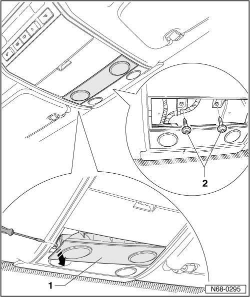
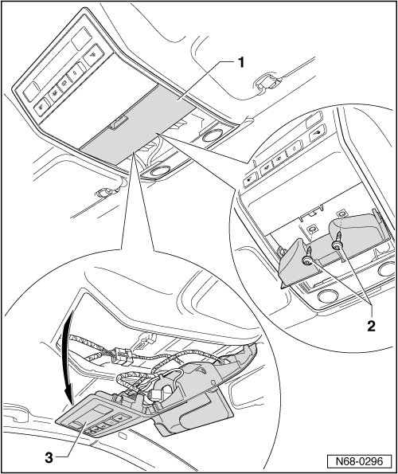

Headliner Console
Headliner Console
Removing
- Switch off ignition.
- Release locking clip using small screwdriver, pull lamp unit - 1 - out of console and disconnect from wiring harness.
- Remove the two bolts - 2 -.

- Open compartment - 1 -.
- Remove the two bolts - 2 -.
- Pull back of console - 3 - out of mountings in headliner - arrow - and disconnect wiring harness.

Installing
- Perform the steps used for removal in reverse order.